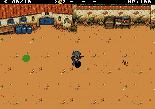
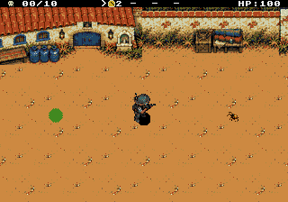
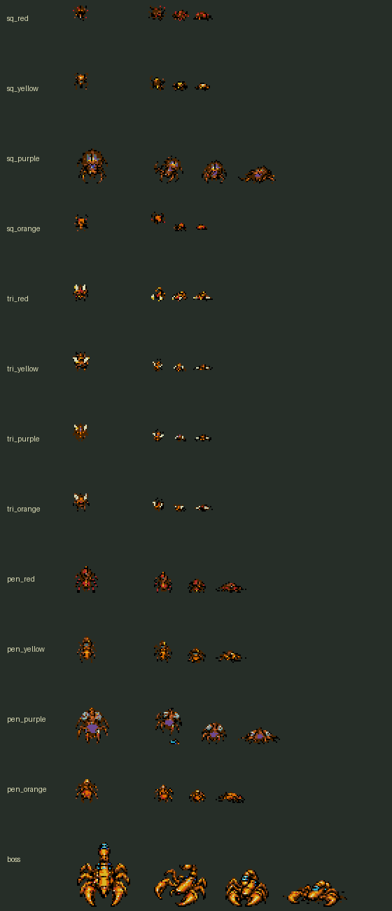

PLAGUEFALL / INTEGRAÇÃO NO JOGO
Metal contra quitina.
Agora no combate.
TIROS A + MORTE 2 · IMPLEMENTADOS · NTSC / PAL
Damião dispara balas metálicas. Torreão, Fuzileiro, Artilheiro e Escorpião lançam espinhos de cores próprias, orientados pela trajetória nas oito direções.
Baixar ROM validadaComparar com a proposta aprovada
Os cinco disparos
De cima para baixo: Damião, Torreão vermelho, Fuzileiro âmbar, Artilheiro violeta e Escorpião ciano. Cada linha mostra L, SE, S, SO, O, NO, N e NE.

Esta prancha amplia os tiles usados pela ROM. Velocidade, dano, cadência, quantidade e colisão foram preservados.
Recuo, patas e queda
As 13 espécies têm três quadros próprios. O acerto fatal remove o inimigo do combate imediatamente; a animação termina no resíduo. São cerca de 300 ms nas mortes comuns e 500 ms no chefe.
Fortaleza

Captura de um cenário controlado no emulador. O quadro final permanece mais tempo neste GIF para facilitar a leitura.
Escorpião

O chefe mantém cauda e garras. No fim da campanha, a queda aparece antes da transmissão final.
Validado nas duas regiões
- 39 quadros de morte das 13 espécies e os cinco disparos nas oito direções.
- Bomba sem drop, dano por fogo, reação em cadeia e divisão da Alcateia.
- Pausa e ajuda preservando os efeitos e restaurando os tiles corretamente.
- Mortes sem deslocar tiros nos limites de sprites por linha.
- Preparação, pausa, ajuda, derrota, repetição e resultados das 20 fases em NTSC e PAL.
O resultado espera a última queda terminar, com o combate congelado. Mortes em massa respeitam o limite de quatro animações comuns; as demais ficam no resíduo. Com o chefe, cabem até duas mortes comuns.
Relatório e identificação da ROM testada
Ver as três poses finais de cada espécie
À esquerda está o sprite vivo existente; à direita, os três novos quadros. Esta prancha mostra a exportação nativa ampliada em 2×.

Recursos e funcionamento
| Recurso | Implementado |
|---|
| Tiros | 480 bytes, um sprite de 8×8 por projétil. |
| Mortes | 11.808 bytes de arte e 56 bytes de registros visuais. |
| VRAM | Reservas de ícones e retratos reutilizadas durante o combate; cenário e herói no mesmo lugar. |
| Transferências | Mortes compartilham o limite de quatro atualizações de quadros com os inimigos; preservam a margem de HUD/SAT. |
A animação recebe uma cópia da posição e do tipo. Não conserva a IA, a colisão ou um ponteiro para um slot de inimigo que pode ser reutilizado.